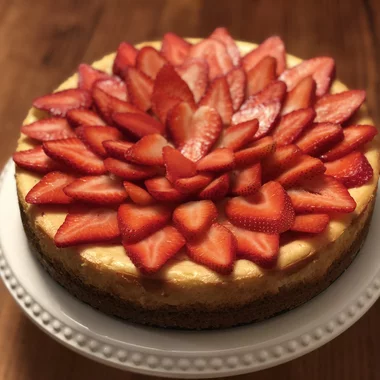

Serves about 12 people
Prep Time: 30 minutes | Cooking Time: 1 hour | Cooling Time: 6 hours
Total Time: 7 hours 30 minutes
Ingredients
15 graham crackers, crushed
2 tablespoons butter, melted
4 (8 ounce) packages cream cheese
1 ½ cups white sugar
¾ cup milk
4 eggs
1 cup sour cream
1 tablespoon vanilla extract
¼ cup all-purpose flour
Strawberries for topping (optional)

Directions
Preheat oven to 350 degrees F (175 degrees C). Grease a 9 inch springform pan.
In a medium bowl, mix graham cracker crumbs with melted butter. Press onto bottom of springform pan.
In a large bowl, mix cream cheese with sugar until smooth. Blend in milk, and then mix in the eggs one at a time, mixing just enough to incorporate. Mix in sour cream, vanilla and flour until smooth. Pour filling into prepared crust.
Bake in preheated oven for 1 hour. Turn the oven off, and let cake cool in oven with the door closed for 5 to 6 hours; this prevents cracking. Chill in refrigerator until serving.